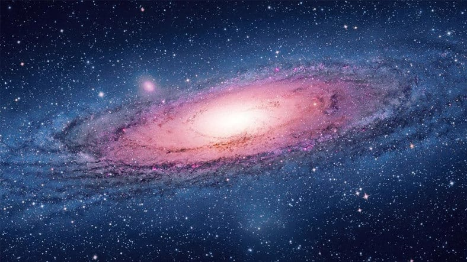
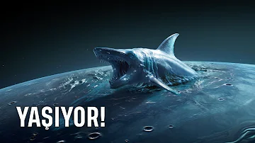
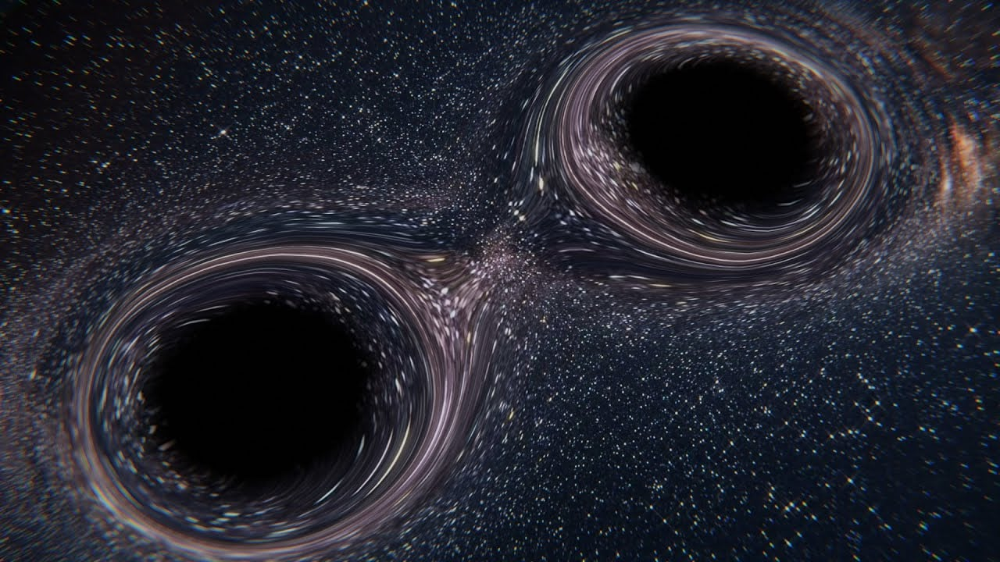
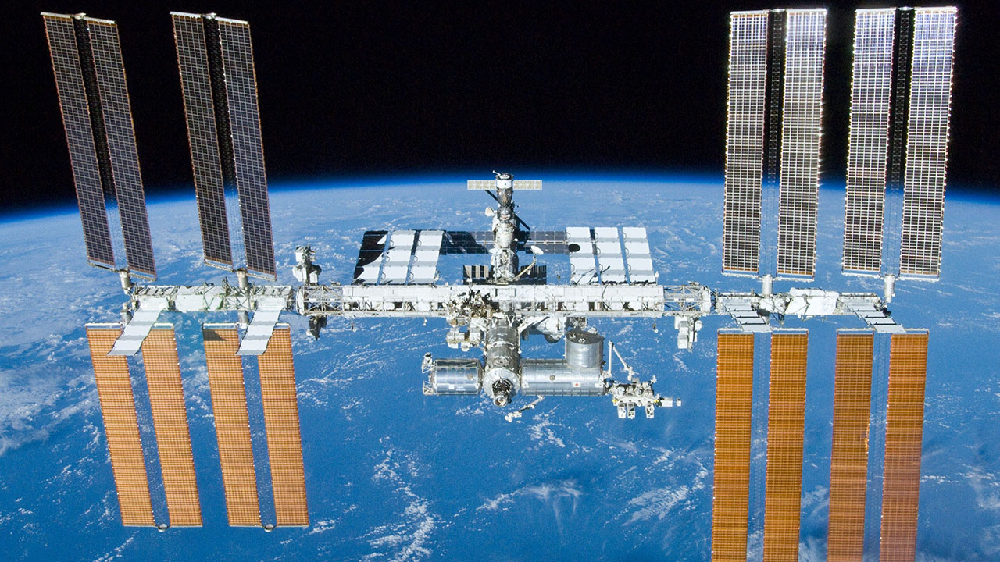

Son Haberler
Su Ayısını Duymuş muydunuz?
 Fotoğraftaki canlı uzay boşluğunda yaşayabilen tek canlıdır
Uzay boşluğuna gönderildi fakat herşey planlandığı gibi gitmedi ve
bu su ayılarının bulunduğu Aya gönderilen araç sert bir şekilde ay yüzeyine çarptı.
Su ayıları şu anda bildiğimiz en dayanıklı canlıdır. Nerdeyse her türlü ortamda hayatta kalabilmektedir.
Fotoğraftaki canlı uzay boşluğunda yaşayabilen tek canlıdır
Uzay boşluğuna gönderildi fakat herşey planlandığı gibi gitmedi ve
bu su ayılarının bulunduğu Aya gönderilen araç sert bir şekilde ay yüzeyine çarptı.
Su ayıları şu anda bildiğimiz en dayanıklı canlıdır. Nerdeyse her türlü ortamda hayatta kalabilmektedir.
bize ne yakın olan gezegen
 - Yaklaşık 200000 ışıkyıllık muazzam çapıyla Andromeda Galaksisi, Yerel Grup içinde büyüklük açısından ilk galaksi konumunda olup, Samanyolu ikinci sırada yer almaktadır. Andromeda Galaksisi bizim galaksimize en yakın spiral galaksidir ve Samanyolu'nun yaklaşık iki katı kadar, yaklaşık bin milyar yıldız içerir.SON DAKİKA Bilim İnsanları Neptün'de Yaşam Buldu!
SON DAKİKA Bilim İnsanları Neptün'de Yaşam Buldu!
Araştırmalara sonucu neptünün eskiden daha çok olsa da yaşama elverişli lduğu keşfedildi. Hatta gezegenin içinde donmuş su olduğu ve bu suyun içinde bazı canlıların olduğu düşünülüyorYoksa Uzaylılar mı Var?
Bilim İnsanlarından Açıklama Geldi! "Uzay da tek olmayabiliriz" son yapılan açıklama da en dikkat çeken söz bu oldu ve %60 ihtimalle içinde yaşam olan bir gezegen bulundu!İki kare delik çarpıştı
 ŞOK ŞOK ŞOK İLK DEFA İKİ KARA DEİĞİN ÇARPIŞTI GÖZLEMLENDİ! Bu hafta iki kara delik çarpıştı ve bu çarpışma çok gelişmiş cihazlarımız tarafından algılandı. Space-Phoenix olarak bunu ilk bizim gözlemleyebilmemiz çok gurur verici oldu.Gezegenlerin sesleri
Bütün gezegenlerin kendi özel sesleri olduğunu biliyor muydunuz? Bu linkten gezegenlerin seslerine ulaşabilirsiniz: Gezegen sesleri buraya tıklayınUluslararası Uzay İstasyonu Nasıl Havada Duruyor?
Uluslararası Uzay İstasyonu Nasıl Havada Duruyor?
Uzay istasyonu, Dünya'nın etrafında dönerken bir düşüş halindedir. Bu düşüş bir süreliğine değil, hiç durmadan devam etmektedir. Yani Dünya etrafında dönerken aynı zamanda sürekli olarak düşüyor. Bu duruma freefall yani serbest düşüş deniyor.Zaman Diye Bir Şey Yok!
 Zaman Diye Bir Şey Yok!
Uzayda zaman kavramı diye birşey yok bir şey olduğunda
uzaya dalgalar gönderir ve bir alıcıya deyinceye kadar gitmeye devam eder.
Zaman Diye Bir Şey Yok!
Uzayda zaman kavramı diye birşey yok bir şey olduğunda
uzaya dalgalar gönderir ve bir alıcıya deyinceye kadar gitmeye devam eder.
Albert Einstein ve Kuantum Fiziği
 905: Albert Einstein dalga özellikleri olan ışığın aynı zamanda,
daha sonra foton diye adlandırılacak olan, belirli büyüklükte enerji
paketlerinden oluştuğu düşüncesini ortaya attı.
905: Albert Einstein dalga özellikleri olan ışığın aynı zamanda,
daha sonra foton diye adlandırılacak olan, belirli büyüklükte enerji
paketlerinden oluştuğu düşüncesini ortaya attı.
Albert Einstein ve Kuantum Fiziği
 Bunu Biliyor muydunuz?
Uzay bir çay kaşığı toplamda 1 milyar ton ağırlığı denk gelmektedir.
Bu da gerçekten baya ağır bişey demek oluyor.
Bunu Biliyor muydunuz?
Uzay bir çay kaşığı toplamda 1 milyar ton ağırlığı denk gelmektedir.
Bu da gerçekten baya ağır bişey demek oluyor.